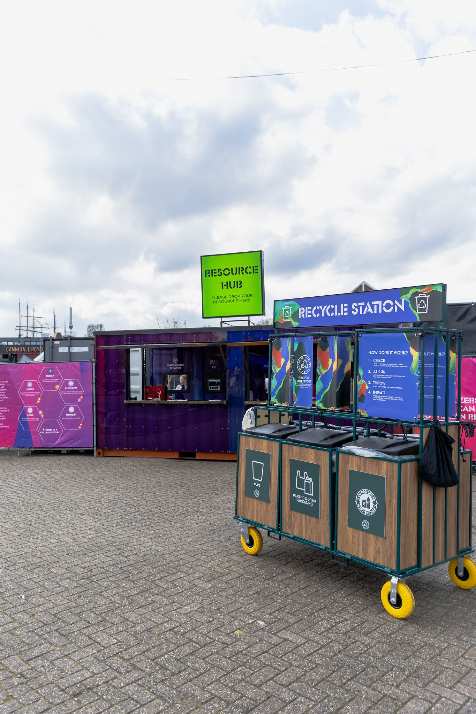

Sustainability
How sustainability is integrated into event delivery — practical approaches for volunteers and operations.
Key areas I focus on within event production.

How sustainability is integrated into event delivery — practical approaches for volunteers and operations.

Coordinating and supporting volunteers and crew across event lifecycles.

Managing ingress flows, check-in systems and audience movement.

Ensuring safety and positive experience for visitors through operations and procedures.